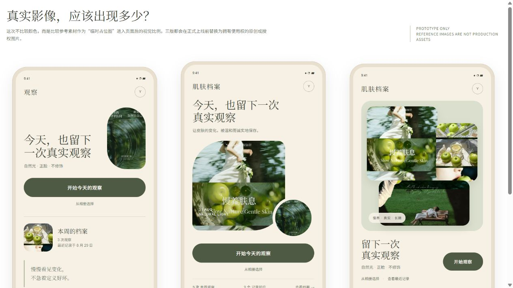
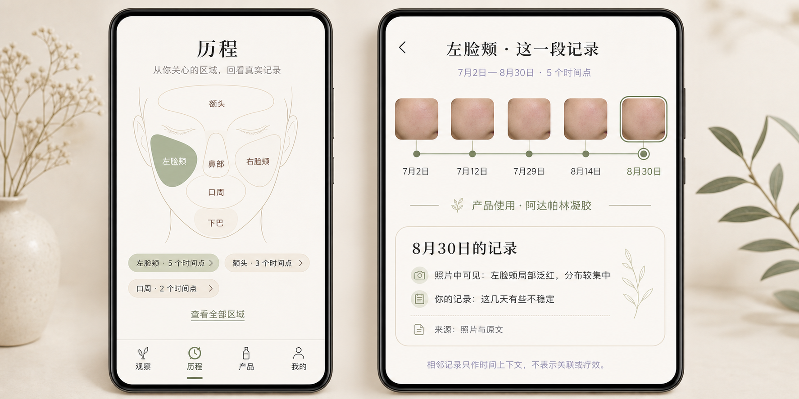
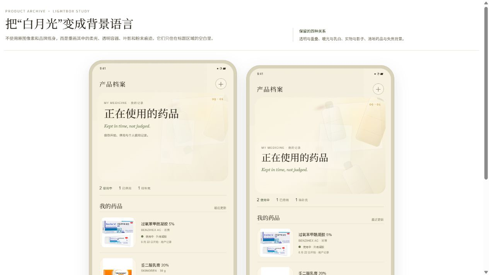
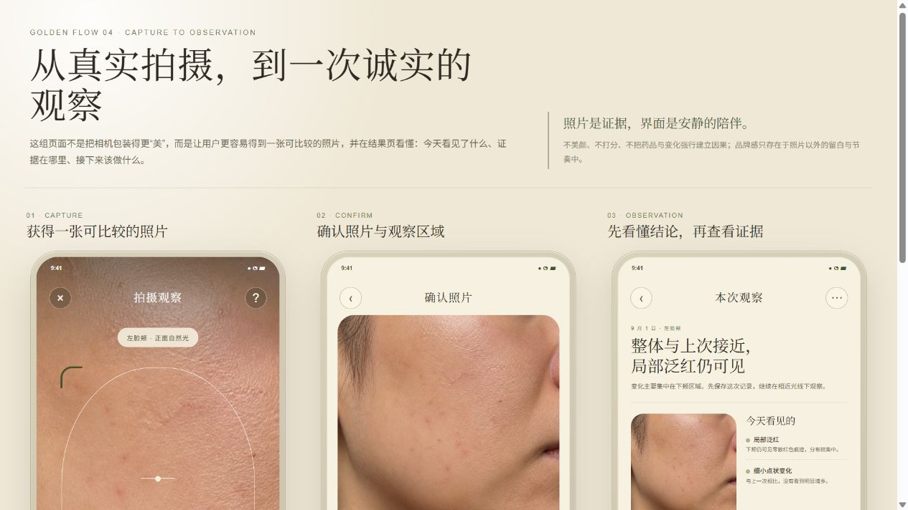

Approved Golden Screens · 04
Skin Care Agent 金标准视觉稿
四组已经确认的页面方向集中在这里。点击“打开完整稿”会在新标签页查看对应原型；档案／历程使用的是你最终确认的参考图。



说明：archive-journey-locked.html 本身只是“方向已锁定”的记录页，不是完整手机稿；完整档案／历程画面已在上方以最终确认图呈现。
四组已经确认的页面方向集中在这里。点击“打开完整稿”会在新标签页查看对应原型；档案／历程使用的是你最终确认的参考图。



